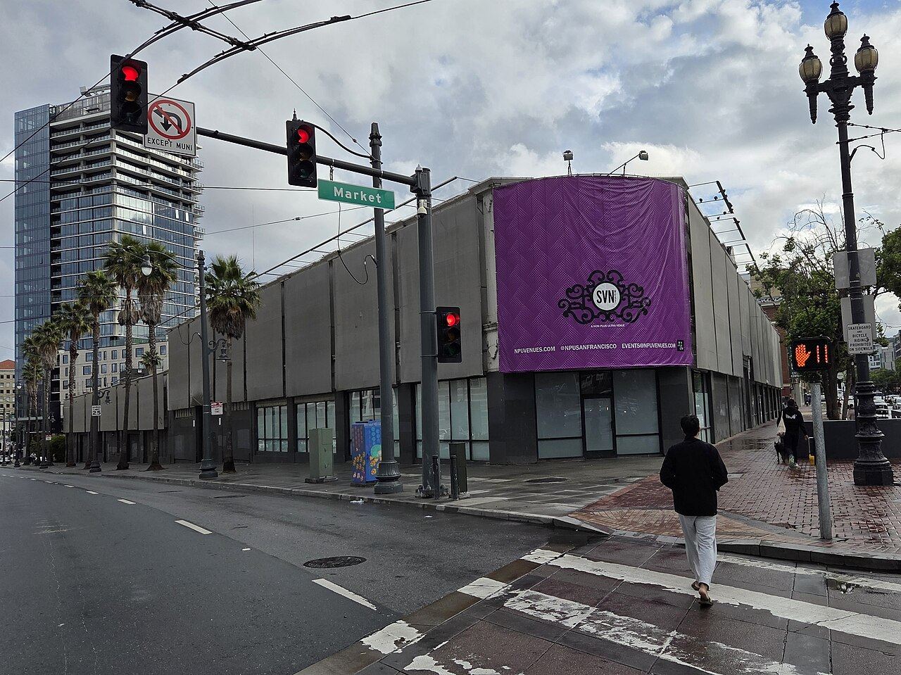
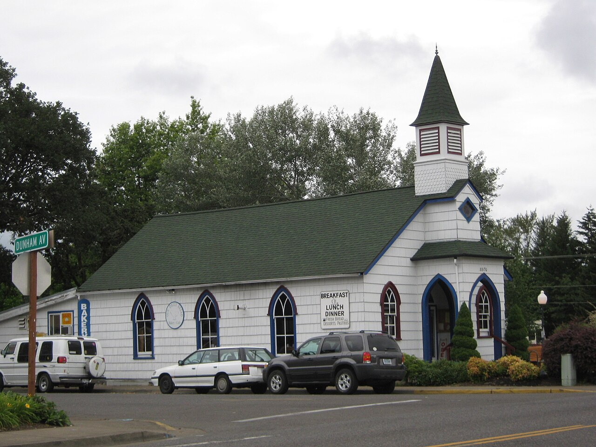
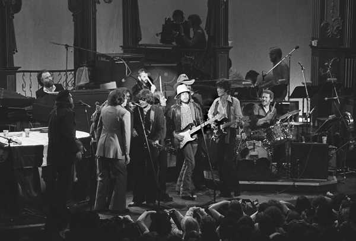
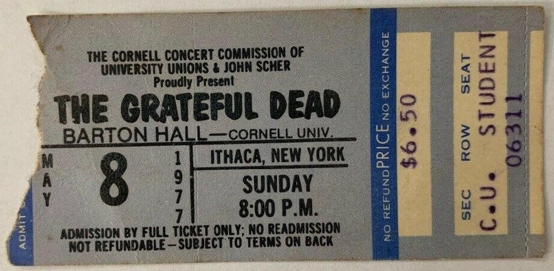
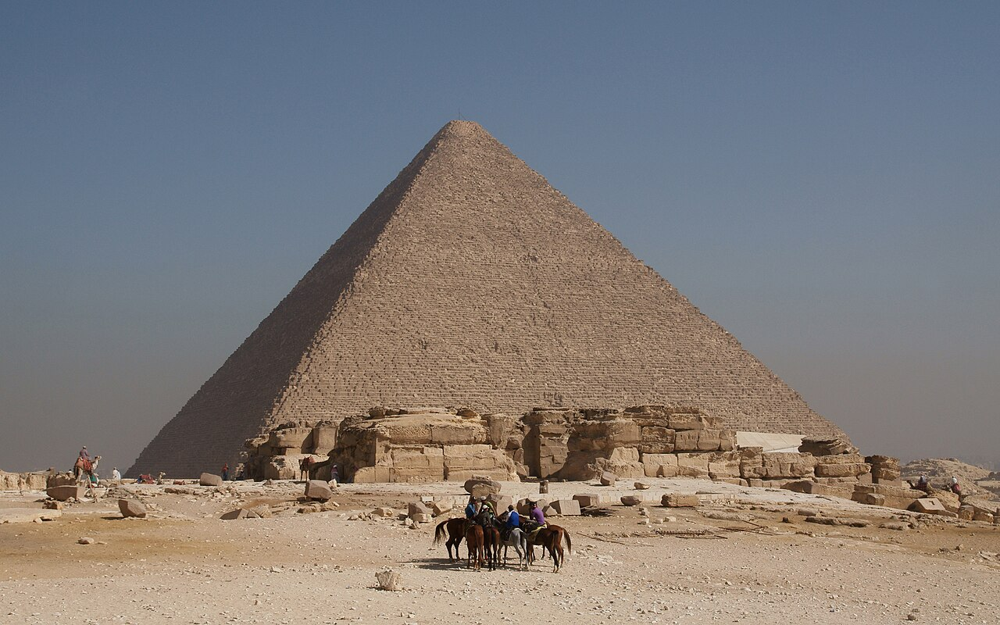
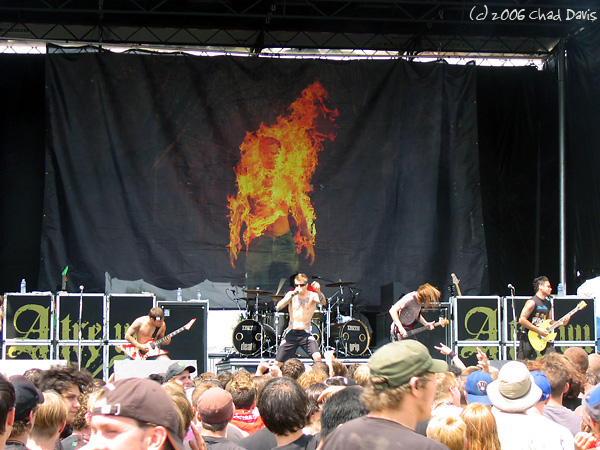
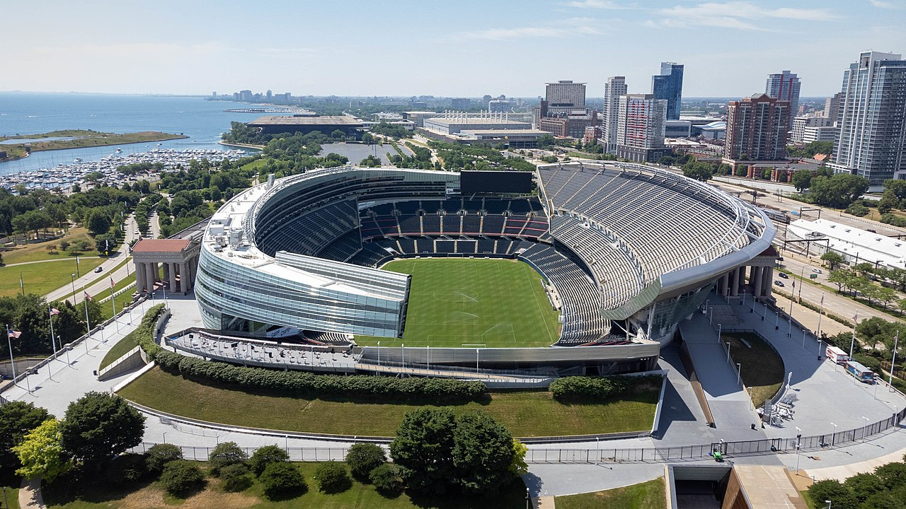

Live Music Pilgrimage · Grateful Dead
1965 – 1995

1965 · Early years
San Francisco, California
First public show under the name Grateful Dead. Bill Graham’s venue became their spiritual home.
1967 · Summer of Love
Golden Gate Park · San Francisco
Thirty thousand in the park — the Dead alongside Jefferson Airplane, and Timothy Leary’s call to tune in.

1972 · Golden era
Veneta, Oregon
Outdoor benefit on a hot August day — peak performance, later immortalized on film.

1974 · Wall of Sound
San Francisco, California
Six hundred forty-one speakers — seventy-five tons of PA. Revolutionary sound, then farewell before the hiatus.

1977 · Peak year
Cornell University · Ithaca, NY
May 8 — Scarlet Begonias into Fire on the Mountain. The show every Deadhead argues about.

1978 · Egypt adventure
Giza, Egypt
Three nights during a lunar eclipse — among the most mystical performances in rock history.

1989 · Late tour
East Troy, Wisconsin
Outdoor amphitheater in the Midwest bowl — a Deadhead mecca through the late era.

1995 · The end
Chicago, Illinois
July 9 — the last concert with Jerry Garcia. Show #2,318. Box of Rain at the close.
Pilgrimage Atlas
Explore every stop — dates, venues, setlists, and archive.org tapes — in the Live Music Pilgrimage Atlas.
/music/music-pilgrimage-atlas.html